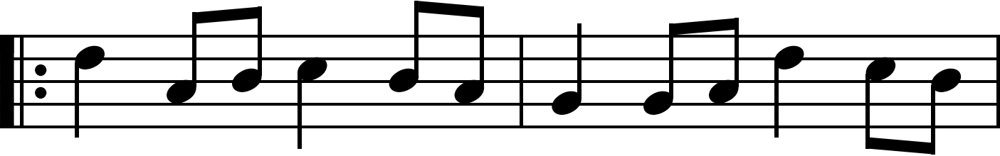
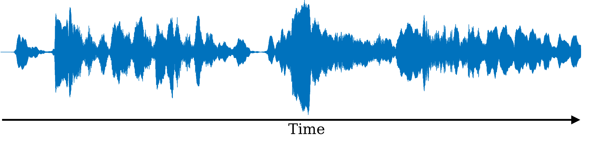
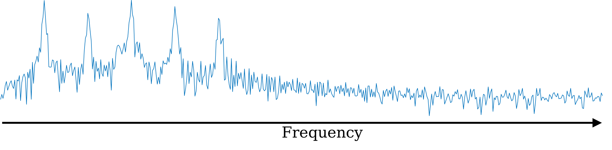
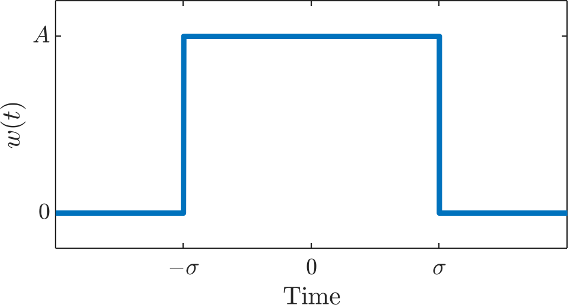
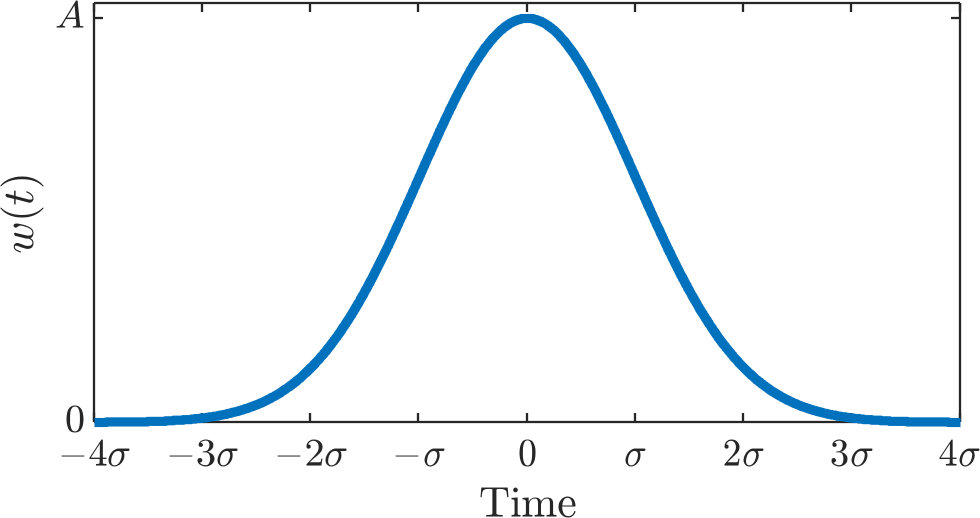
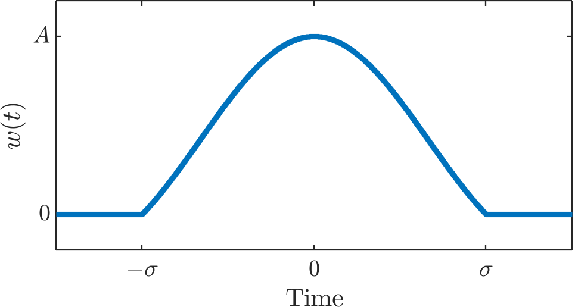
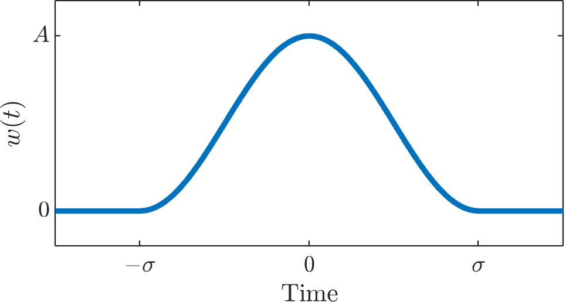
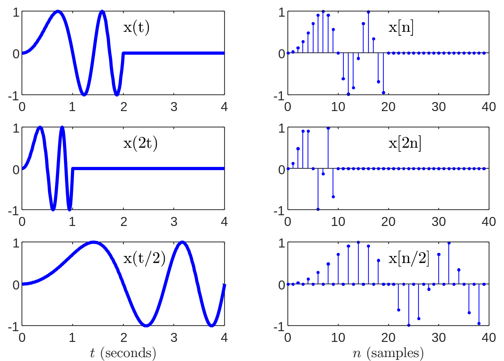

This is a draft. Please let me know if you see any errors.
Time-Frequency Analysis¶
An example of a joint time-frequency signal representation is standard musical notation.

Imagine that instead of this notation, we used a purely time-domain description that describes the shape of the acoustic waveform.

Although the musician might be able to make out the rhythm and intensity clearly, it would be impossible to determine exactly which notes to play.
Now imagine that we used a purely frequency domain description, e.g. the Fourier transform.

This would show which notes to play, but it would be impossible to know when to play them.
In many applications (especially audio) the joint representation can reveal the most important aspects of a signal which might be hidden in the time or frequency domains alone.
Consider two more examples:
The sound of a bird chirping
The ping from marine sonar system
”

”

Although all three representations (time-domain, frequency-domain, and joint time-frequency) contain equivalent information, it is clear that the joint representation has several advantages.
Before we can dig deeper, we must take a step back and understand how time-frequency distributions like the ones above are constructed.
The short-time Fourier transform (STFT)¶
A common method for constructing a time-frequency distribution is the magnitude spectrogram, which is in-turn computed using a variation of the short-time Fourier transform (STFT)
Continuous STFT¶
The continuous-time STFT of a one-dimensional signal \(x(t)\) is a two-dimensional (time and frequency) representation \(X(t,f)\).
Recall the definition of the conventional Fourier transform:
\(x(t)\) is a function of time but \(X(f)\) is not because we’ve integrated over all time from \(-\infty\) to \(\infty\).
In contrast, the STFT uses a window function \(w(\tau)\) to keep the time variable \(t\) while also introducing the frequency variable \(f\).
Window functions
A window function \(w(t)\) is any function designed to ‘focus’ on a segment of a signal by suppressing everything outside of the window. Usually, \(w(t)\) is symmetric about the origin. If we want to focus on a signal \(x(t)\) near the origin then we use the product \(x(t)w(t)\). To focus on \(x(t)\) at some location \(a\) instead of the origin, we shift the window function first, i.e. we use the product \(x(t)w(t-a)\). We usually choose the amplitude \(A\) of a window so that it has unit energy, i.e. \(\int{w^2 (t) dt} = 1\). The width of the window \(\sigma\) is an important parameter since it controls the trade-off between time and frequency resolution. Some common window functions are shown below.
Rectangular window

Gaussian window

Lanczos window

Hann window

Equivalence of Fourier transform and Fourier series for windowed signals
Note that if the window function we choose has a finite width of \(L\), then the integral bounds in the STFT can be equivalently written as:
At each time \(t\), this is equivalent to finding the Fourier series coefficients of the signal created by taking the length \(L\) periodic extension of \(x(\tau)w_L(\tau-t)\).
In other words, once the window is applied, the Fourier transform is equivalent to a Fourier series.
The same is true in discrete time. If we first apply a finite length window \(w_L[n]\), then the discrete-time Fourier transform (DTFT) is equivalent to the discrete Fourier transform (DFT).
Time resolution and frequency resolution¶
When analyzing a signal, there is a fundamental trade off between time resolution and frequency resolution.

To understand this trade-off, consider a special case of the STFT where the window function is Gaussian $\(w(t) = g_\sigma(t) = A e^{-t^2/2\sigma^2} \)$. This is also known as the Gabor transform.
Discrete STFT¶
The discrete version of the STFT replaces the Fourier transform with the discrete-time Fourier transform (DTFT). However, the discrete window function \(w_L[n]\) is typically causal (instead of centered on the origin) and has finite length \(L\). As a result of the finite length, the DTFT is equivalent to a discrete Fourier transform (DFT), and the discrete STFT \(X[n,k]\) is sampled both time (indexed by \(n\)) and in frequency (indexed by \(k\)).
Sampling and the DTFT
The impulse train with sampling period \(T_s\) is defined as
The fourier transform of an impulse train is another impulse train.
The operation of sampling can be modeled as multiplication with an impulse train.
The fourier transform of a sampled signal is called the discrete-time Fourier transform (DTFT).
In other words, to construct the discrete STFT, we perform 3 steps:
Divide the signal \(x[n]\) into segments of length \(L\)
Multiply each segment by the window function \(w_L[n]\)
Compute the discrete Fourier transform of each windowed segment using the fast Fourier transform (FFT) algorithm.
Since the Fourier transform is, in general, complex-valued, we rarely use the STFT directly. Instead, it is common to separate it into it’s magnitude and phase. The plot constructed from the magnitude of the STFT, like the ones shown earlier, is called the magnitude spectrogram.
Filter banks¶
Although the STFT has become ubiquitous for analyzing audio, another method of of time-frequency analysis existed long before computers and fast Fourier transform algorithms: the filter bank.

An example of an analog filter bank used for time-frequency analysis, called the Koenig flame apparatus, is shown above. It utilizes an array of acoustic bandpass filters, called Helmholtz resonators, to visualize the frequency content of incoming sound using a rotating mirror to display the flame manometers which are connected to the array of Helmholtz resonators.
Even in the realm of digital implementation, the filter bank approach to time-frequency analysis has some advantages. When we use the DFT for frequency analysis, we are limited to equally spaced frequency bins and an average latency of \(L/2\) samples. However, we can design the array of bandpass filters in a filter bank to have whatever spacing, frequency response, or delay characteristics necessary for our application.
If we wanted to produce a similar number of frequency bands as we would typically get from the DFT (anywhere from tens to thousands of bands), then we would need to apply tens or thousands of discrete-time filters in parallel. This gets expensive very quickly! Fortunately, there is a more efficient method.
Multirate filter banks¶
To demonstrate the theory underlying multirate filter banks, let us consider one of the simplest examples: the Haar decomposition.
Haar Decomposition¶
In 1909, mathematician Alfréd Haar used a procedure which we would now call a discrete wavelet transform using sums of differences of a list of numbers.
Consider the finite length signal \(x[n]\) below consisting of eight samples:
\(x[0]\) |
\(x[1]\) |
\(x[2]\) |
\(x[3]\) |
\(x[4]\) |
\(x[5]\) |
\(x[6]\) |
\(x[7]\) |
|---|---|---|---|---|---|---|---|
7 |
1 |
−13 |
20 |
4 |
7 |
−18 |
5 |
The transformation we will apply consists of creating two other signals \(s[k]\) and \(d[k]\) by taking sums and differences of adjacent samples from \(x[n]\). However, the signals \(s[k]\) and \(d[k]\) will both half the length of the original signal \(x[n]\).
\(d[0]\) |
\(d[0]\) |
\(s[1]\) |
\(d[1]\) |
\(s[2]\) |
\(d[2]\) |
\(s[3]\) |
\(d[3]\) |
|---|---|---|---|---|---|---|---|
7+1 |
1−7 |
−13+20 |
20+13 |
4+7 |
7−4 |
−18+5 |
5+18 |
8 |
−6 |
7 |
33 |
11 |
3 |
−13 |
23 |
Although these equations look similar to an LTI system specified by a difference equation, these relationships do not constitute LTI systems because they include downsampling operations
Upsampling and downsampling
The operations of upsampling and downsampling can be thought of as the discrete-time versions of expansion and compression.
Consider a continuous-time signal \(x(t)=\sin{(\pi t^2)} \mathbf{1}_{[0,2]}(t)\).
\(x(t/2)\) is the expansion of the signal by a factor of two.
\(x(2t)\) is the compression of the signal by a factor of two.
Sampling \(x(t)\) at a rate \(f_s=10 \text{Hz}\) produces \(x[n] = \sin{\left(\frac{\pi}{100} n^2\right)}\mathbf{1}_{[0,2]}(n)\)
\(x[n/2]\) is the signal upsampled by a factor of two.
\(x[2n]\) is the signal downsampled by a factor of two.

A common convention is to use \(\uparrow\) to represent upsampling and \(\downarrow\) to represent downsampling. For example:
We can equivalently express these two systems in terms of convolution (i.e. application of an LTI filter) and a downsampling operation.
This transformation, the Haar decomposition, can be considered a two-channel filter bank that decomposes the signal into a high-pass and a low-pass component, followed by downsampling by two.
Frequency response of two-sample sum and difference
The sum of two adjacent samples is a low-pass filter with frequency response \(H_s(\omega)=1+e^{-j\omega}\)
The difference is a highpass filter with frequency response \(H_d(\omega)=1-e^{-j\omega}\).
It should come as no suprise then that by adding the outputs of these two filters, the result is an all-pass filter:
By recursive application of this process, we can divide the signal into arbitrarily many bands while maintaining a simple process to recover the signal. In particular, the \(n\)th sample of the original signal can be recovered using the following procedure: